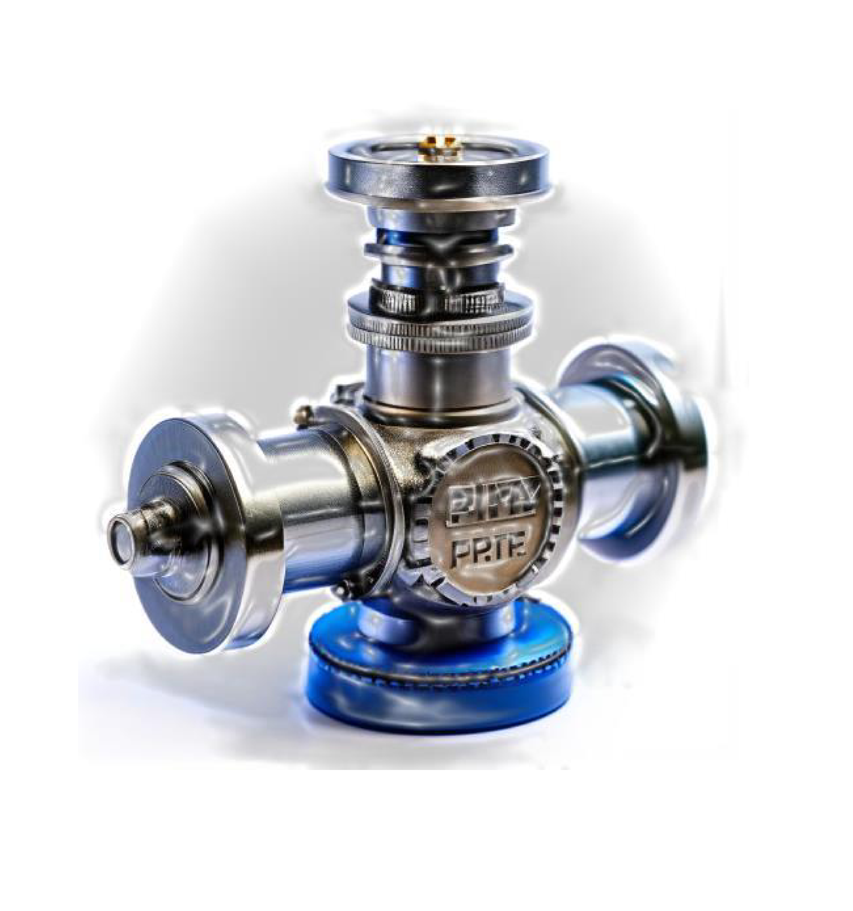

Задвижка шиберная относится к параллельным задвижкам, запирающий элемент которых выполнен в виде пластины, согласно ГОСТ 24856-2014. Арматура трубопроводная. Термины и определения»
| Тип | Серия | Среда |
|---|---|---|
| 510 | Cо сквозным ножом | Для сред с высокой концентрацией твердых частиц |
| 520 | C двухсторонней герметичностью | Для сред, содержащих взвешенные твердые примеси до 5% |
| 530 | C двухсторонней герметичностью в разборном корпусе | Транспортировка слабозагрязненных жидкостей с содержанием взвешенных частиц до 5% |
| 540 | C односторонней герметичностью | Транспортировка жидкостей с содержанием взвешенных частиц до 5% или волокнистых включений до 35% |
| 550 | C двухсторонней герметичностью с внутренними резиновыми вставками | Предназначены для использования на линиях транспортировки жидкостей с суспензией твердых частиц, воды с содержанием грязи, камней и пульпы |
| 560 | C двухсторонней герметичностью с полиуретановым уплотнением | Транспортировка высокоабразивных рабочих сред с большим содержанием твердых включений |
| 570 | C односторонней герметичностью в закрытом корпусе для высокого давления | Транспортировка жидкостей с содержанием взвешенных частиц до 5% в условиях высокого давления |
Задвижки дисковые
| Модель | Характеристика | Область применения |
|---|---|---|
| ЗД | задвижка стальная, полнопроходная, шибер дисковый с возможностью регулирования расхода транспортируемой жидкости | Используются в качестве запорного и (или) запорно-регулирующего устройства в нефтеперерабатывающих производствах на трубопроводах с температурой транспортируемой среды не более +120 °С |
| ЗДШ | задвижка стальная, шибер дисковый, быстросменные или со встроенные штуцеры для ступенчатого регулирования расхода транспортируемой жидкости |